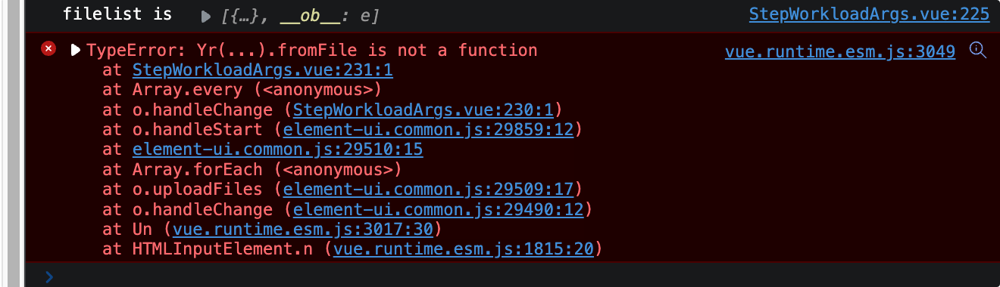

Vue 中文件校验功能实现
Main
关于 MP4 的实际检测头可以查看参考链接 3，但实际测试时 MP4 的 header 却不是链接中所说 00 00 00 18 66 74 79 70，而是 00 00 00 20 66 74 79 70，后面可能需要再排查下原因。
主要参考链接 1 ，过程中遇到了几个比较迷惑的问题。解决后测试上传改过后缀的 TXT 文件能够识别出来非 MP4 文件并实现过滤。
过程中需要反复加 log 打印输出调试，代码中可以添加如下语句进行调试。然后打开浏览器的 Developer Tools 控制台的 Console 部分，实际运行时便可以看到输出。
1 | console.log("Test is", test) |
1. async 以及 await 的使用
根据参考链接中代码，第一次在 Vue 中使用异步，晕了半天。这里主要参考链接 5 ，简单总结如下几条使用注意：
await语法只能在async函数中使用，其他普通函数无法使用；- async function 和普通的 Vue 函数声明方式不同，大致如下
1 | methods: { |
- async function 不能像普通函数一样调用，
async函数内部return语句返回的值，会成为then方法回调函数的参数，参考链接 5 其调用实现如下
1 | async function f() { |
Bugs
1. File-type fromFile 无效（Passed）
参考该链接 Node.js：file-type检测文件类型-阿里云开发者社区 (aliyun.com) 测试无效，输出打印如下

2. TypeError: Failed to execute ‘readAsDataURL’ on ‘FileReader’ 问题（Solved）
实现过程中遇到如上问题，根据参考链接 4 解决，将原本代码中的 file 改为 file.raw 即可。
3. Uncaught TypeError: e.slice is not a function 问题（Solved）
解决方法同问题 2，将原本代码中的 file 改为 file.raw。
4. Vue el-upload 设置 auto-upload 为 false 时 before-upload 调用会失效（Caution）
具体查看参考链接 (113条消息) element upload before-upload 不起作用_element before-upload 无法阻止继续请求_见证小白的成长的博客-CSDN博客
务必注意此处问题，否则调试会特别麻烦。此时只能在on-change的实现中对文件进行限制
Reference
- vue 里怎么通过魔数（magic number）去限制上传文件类型？-阿里云开发者社区 (aliyun.com)
- jealyn/real-file-type: JS 精准获取上传文件类型 (github.com)
- 文件头标志大全 - 苗士军 - 博客园 (cnblogs.com)
- [Vue warn]: Error in v-on handler: “TypeError: Failed to execute ‘readAsDataURL’ on ‘FileReader’: parameter 1 is not of type ‘Blob’.” - ABKing - 博客园 (cnblogs.com)
- [Vue-重温async和await的用法 - 掘金 (juejin.cn)]
All articles in this blog are licensed under CC BY-NC-SA 4.0 unless stating additionally.